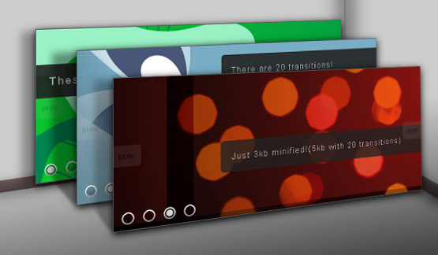
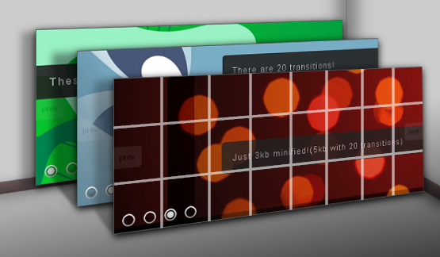

svUltimateSlider is a jQuery plugin meant to make it easy for users to create some amazing content sliders/slideshows. The focus during the creation of this plugin was allowing users to easily control/define transitions.
(please read the documentation thoroughly before contacting me for support)
The markup is very simple, the slides themselves are just list items. They can contain any html markup you wish them to have.
<ul class='slider'>
<li>Slide one content</li>
<li>Slide two content</li>
<li>Slide three content</li>
<li>Slide four content</li>
</ul>The CSS is just as simple, give the ul and list elements all the same width/height and set the overflow to hidden for each.
ul.slider{
list-style: none;
margin: 0;
padding: 0;
height:250px;
width:600px;
display:block;
position:relative;
overflow:hidden;
}
ul.slider li{
display:block;
padding:0;
margin:0;
height:250px;
width:600px;
position:relative;
overflow:hidden;
} And that is all the setup you need before initializing and using
the script.
There are a few things you should note about the slides markup before diving in though.
You CANNOT explicitly set the 'position' attribute of any element contained within a slide if you are using a
transition that animates opacity. IE will animate the opacity of the parent
slide but leave these child elements with full opacity. That means no 'position:relative',
'position:absolute' or etc on elements contained within a slide. It is much easier to use padding
and margin to position child elements.
The script works by basically creating a copy of the slides and breaking
the copy down into the grids that get animated. So that means you CANNOT base
the styling of a slide on styling the 'li' element itself, no classes or ids specific to
those 'li' elements. If you want to style is such a fashion, add a div with the li and style the div.
This also means that when you style child elements of the slide your CSS selectors should NOT be
defined by the parent 'li' element. For example, 'ul.slideshow li span.text' would not work, but just 'span.text' would.
Each slide(list item) is stacked on top of each other, with the current slide being on top.
When a transition takes place, a slide is basically broken down into a grid based on the specified rows and columns(the image below simulates how a transition with 8 columns and 3 rows would be broken down).
The blocks(or rows or columns) are then animated to either reveal the slide below or to form the next slide in the slideshow.
So basically different transitions are created by specifying a different amount of rows and columns to break the slide down into as well as animate different CSS attributes of the blocks(or rows or columns). Only 5 css attributes of the blocks(or rows or columns) are meant to be animated to create the transitions;'top','left','width','height' or 'opacity'. For example, the transition simulated in the image above breaks down the slide into 8 columns, 3 rows. And it animates the CSS attributes 'left', 'top' and 'opacity' of the blocks created by the grid.
It is extremely important that you understand that only those 5 css attributes are meant to be animated in order to create the transitions
Now on to actually using the plugin...
To use the script you must first include jQuery, the plugin and optionally one or more of the transition files(if you plan on using these).
<script type="text/javascript" src="jquery-1.4.2.min.js"></script>
<script type="text/javascript" src="svUltimateSlider.js"></script>
<script type="text/javascript" src="transitions.js"></script>To use, select the 'ul' element of the slider/slideshow markup and call the 'svUltimateSlider' method passing in an options object containing the parameters to configure the slider.
var options = {
delay: 3000, //Delay between transitions
next:'#next', //OPTIONAL selector for next button
prev:'#previous',//OPTIONAL selector for previous button
controls:'.controls',//OPTIONAL selector for list of controls
type:'fade',//The transition or transitions
onend:null, //OPTIONAL onend callback function
onstart:null//OPTIONAL onstart callback function
};
$('ul.slider').svUltimateSlider(options);
'delay' is how long to show a slide before transitioning to the next.
'next' is a selector for an element that when clicked will cause the slideshow to transition
to the next slide(can pretty much be any type of html element).
'prev' is a selector for an element that when clicked will cause the slideshow to transition
to the previous slide(can pretty much be any type of html element).
'controls' is a selector for an undordered list. The number of elements in the unordered list
must coincide with the number of slides present in the slideshow. The index number of the 'li' list item
in the list that coresponds to the current slide being viewed will have an 'active' class applied to it.
This is to allow you to style the control of the active slide to set it apart from the rest.
'type' is the type of transition or transitions(by name). It can either be a single string specifying
the name of a single type of transition or an array of names of transition types to be cycled through. By default
the script itself only includes a 'fade' transition(all other transitions included in the extra file are
named later in this document).
'onend' and 'onstart' are callback functions that will be called before and after the transition animations take place.
They recieve the index number to the current and next slides as arguments.
The transitions are they themselves objects and are held in the 'transitions' object of the script.
fade = {
duration:800,
delay:0,
css:{opacity:0},
columns:1,
rows:1,
order:'normal',
easing:'linear',
slide:'current'
}Each transition object holds 8 properties that define the transition(remember the images/description above).
'duration' is how long each block(or column or row) is animated.
'delay' is the time between when one block(or column or row) starts animating and the next block(or column or row) starts animating.
'css' is an object of css properties passed directly to jQueries 'animate' method
for each block(or row or column). IF you are animating the 'current' slide to create
the transition then this object is meant to hold the value to which the blocks will be animated
to. IF you are animating the 'next' slide, this object will be applied to the blocks BEFORE they are
animated to their final position. Please see the 'animate' documentation about how to form these parameters. Also, as previously
mentioned, only 5 css attributes of the blocks(or rows or columns) are meant to be animated to create
the transitions; 'top','left','width','height' or 'opacity'
'columns' is the number of columns to break the slide down into
'rows' is the number of rows to break the slide down into
'order' is the order the blocks are animated in, either 'normal', 'reverse' or 'random'. Normal will animate the rows/columns/blocks from left to right and top to bottom. Reverse will animate them from right to left and bottom to top. Random will randomly
choose blocks/rows/columns to animate.
'easing' is an optional easing function to pass to the animate method if you are using the easing plugin.
Just adding an easing function to a transition can give it a completely different effect. jQuery ships with two easing options by default 'swing' and 'linear', this script will default to 'swing' for all transitions if the easing plugin is not
available.
'slide' tells the script whether you want to break down and animate either the current slide or the next slide to create the transition. Can either be 'current' or 'next'.
NOTE: The script is setup to default to values set in the 'fade' animation above if a property is missed or not included in the transition being called. It is also set to fallback to the fade transition as a whole if the transition wanted does not exist.
There are two ways to create and add transitions to the script.
The first way we will cover is using the 'extend' method of jQuery
to extend the existing transitions object.
jQuery.extend(jQuery.svUltimateSlider.transitions,
{
transitionName:{
//transition properties
}
});So suppose we wanted to re-create the animation simulated in the image earlier in this document we would define our transition like so...
jQuery.extend(jQuery.svUltimateSlider.transitions,
{
ExampleTransition:{
speed:3000,
css:{opacity:0,top:'-=100',left:'-=200'},
columns:8,
rows:3,
factor:3,
order:'normal',
easing:'swing'
}
});Now if we wanted to use this new transition along with the fade transition we would pass an array containing the names to the script as we initialize it.
var options = {
delay: 3400,
type:['ExampleTransition','fade']
};
$('ul.slider').svUltimateSlider(options);The second way is to actually pass in the definition of the transition as part of the options you initialize the script with. So again using the example above.
var options = {
delay: 3400,
type:['ExampleTransition','fade'],
transitions:{
ExampleTransition:{
speed:3000,
css:{opacity:0,top:'-=100',left:'-=200'},
columns:8,
rows:3,
factor:3,
order:'normal',
easing:'swing'
}
}
};
$('ul.slider').svUltimateSlider(options);The second way is great for defining a single or a couple transitions while the first method is great for defining many transitions.
As mentioned earlier, the 'fade' transition is included with the script by default. The 29 transitions listed below are defined in the extra files of transitions and can be edited to suit your needs.